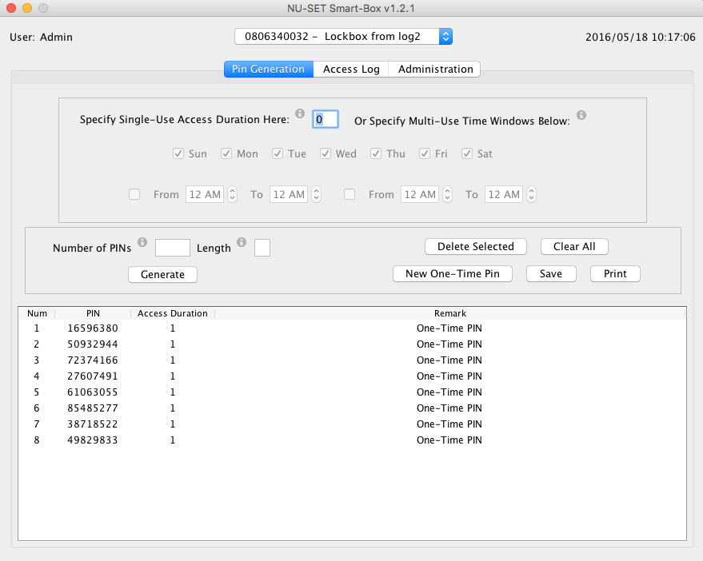

Binary Trees is a one-man (me, Adam Ehven) software development company in Golden, Colorado. I freelance for a number of companies and am always interested in new projects. I've done all sorts of things over the years -- FORTRAN in the aerospace industry, C++ and Java in the telecom industry, C# in the oil industry, and Ruby on Rails in web development for all kinds of businesses.
I use common open-source tools to build the application, so the only cost to you is labor and web hosting services (which are usually pretty cheap). You will have complete access to the source code and the web server -- it's all your stuff, I just take care of it for you. Take this stuff to any other developer at any time, and they'll know what to do with it.
I've recently finished working on a system for monitoring and controlling variable-message road signs for Rennicks UK. This application has a very dynamic user interface and shows how the user can be kept engaged even while somewhat slow processes are going on in the backgournd, like communicating with remote signs. You can see it here.
Here's a slightly older one -- a fantasy soccer application with a unique twist on how you value players and earn points. This app shows pixel-perfect placement of game elements as envisioned by a graphic designer and implemented to her exact specification. You can see this one running here.
Since most web applications have some basic requirements in common, I've pre-built a starter app that includes all the basics, like user and customer management, role-based permissions, auditing, etc. You can see it running here and you can see the server-side code here and the client-side code here.
As most of the web development I've done is on members-only sites, here are some screen shots that might give you some idea of what else is out there.
The application below configures programmable lockboxes. It handles a large number of customers, each of which has any number of lockboxes which they can program to respond to different kinds of PINs at various times. This application uses Ruby on Rails and Angular JS.
Next is a fully RoR application (Rails-generated views as well) that controls a magnetic therapy device, as well as all the back-office issues of customer and user setup, treatment protocol definition, credit card payments, etc. etc.

A couple of shots now of an older application that controls variable message signs such as the ones you see on the road around construction sites and events. Along with controlling the signs' displays, this application can also graph telemetry from the signs, show where they are on the map, and even send alarms when they "leave" a geographical area they're supposed to stay in....
And here's an old-school Java desktop application, the kind you have to install on your PC or Mac. It's the early version of the lockbox application shown above. If you have legacy software that gets installed like in the old days and you want to move it to the web -- I've done that, too.
